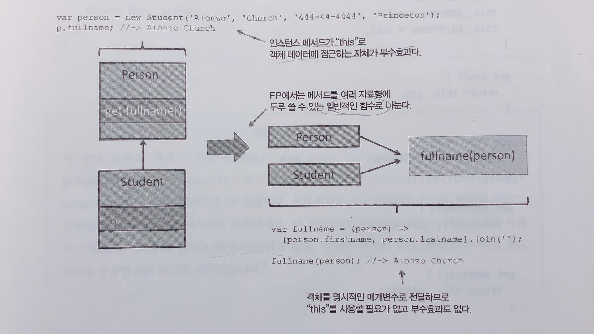
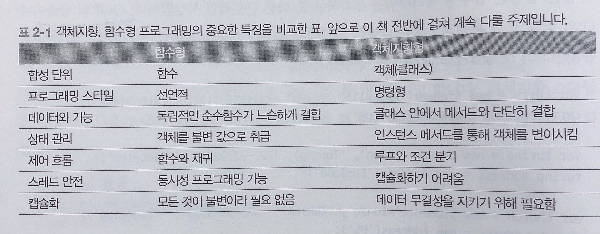
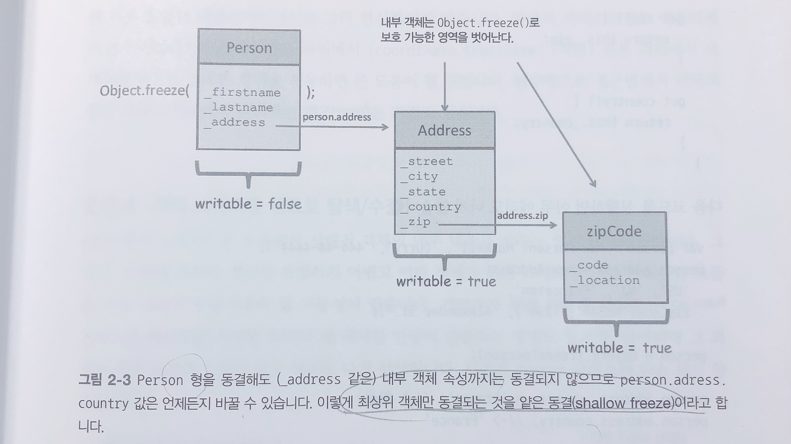
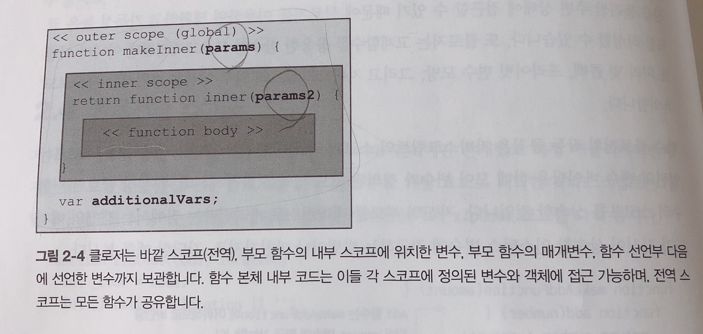
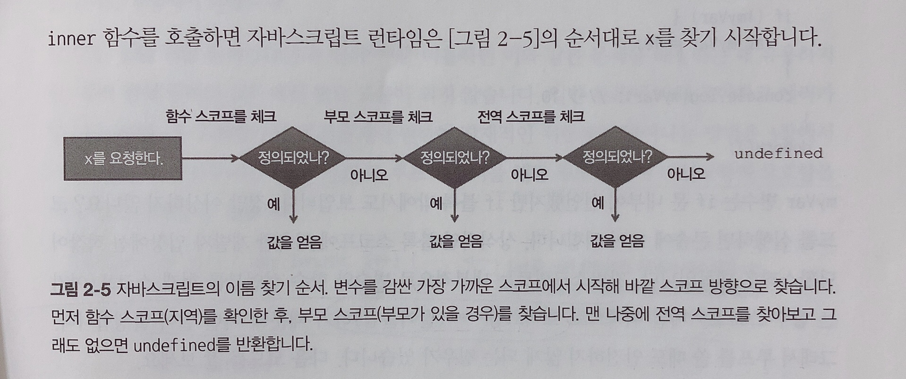

이번에 정리할 내용은 Chapter 2. 고계 자바스크립트이다.
이 장의 내용
- 자바스크립트가 함수형 언어로 적합한 이유
- 자바스크립트는 다중 패러다임 개발이 가능한 언어
- 불변성 및 변경에 대한 정책
- 고계함수와 일급 함수
- 클로저와 스코프 개념
- 클로저의 활용
왜 자바스크립트인가?
편재성(어디에나 있음) - 동적형식(dynamically typed)이고 객체지향적 범용언어이자 프로그래밍 언어 중에 가장 널리 쓰이면서, 모바일, 웹사이트, 웹서버, 데스크톱, 임베디드 애플리케이션, 심지어 DB에 이르기까지 광범위하게 쓰인다.
아직도 꾸준히 진화, 개선 중이다 - 현재 가장 주력버전인 ES6에서는 화살표함수, 상수, 이터레이터, 프로미스 등 함수형 프로그래밍에 걸맞은 기능이 많이 추가되었다.
함수형 장치가 많이 탑재되었지만, 자바스크립트는 어디까지나 함수형인 동시에 객체지향 언어라는 사실을 명심해야한다.
많은 개발자들이 가변 연산, 명령식 제어구조, 객체 인스턴스의 상태를 변경하는 코드를 아무렇지 않게 쓰고 있어 진짜 함수형 자바스크립트 코드는 흔치않다. 그럼 먼저 객체지향과 함수형 프로그래밍의 패러다임 차이를 살펴보자.
함수형 대 객체지향 프로그래밍
함수형/객체지향 모두 중대형 시스템 개발에 사용가능하다. 자바스크립트는 이 두 패러다임을 적절히 잘 버무려놓은 언어라 이 둘을 잘 조합해서 사용할 수 있다. 개발자의 개인적인 취향과 해결해야할 문제의 요건에 따라 조합이 달라질 수 있다.
먼저, 함수형/객체지향 두 접근 방법이 서로 어떤 차이점이 있는지 이해해보자.
어떤 학습 관리 시스템의 Student 객체를 간단히 모형화modeling한다고 하자.
Student는 클래스나 형식 계층 관점에서 성, 이름, 주소 같은 기본 속성을 포함한 Person의 하위형이라고 볼 수 있다.
추가할 기능이 있으면 Student보다 더 구체화한 형식, CollegeStudent 같은 형식을 만들어 붙이면 된다.
==> 객체지향 프로그램의 핵심이 바로!! 새로운 파생객체를 생성하여 코드를 재사용하는 것!
객체지향과 함수형의 가장 중요한 차이점은 바로 이런 데이터(객체 속성)와 기능(함수)을 조직하는 방법에 있다.
- 객체지향 프로그래밍
인스턴스 메소드를 통해 가변 상태를 노출하고 조작할 수 있도록, 객체 기반의 캡슐화에 지나치게 의존한 채 가변 상태의 무결성을 유지힌다. 결국 객체의 데이터와 잘게 나뉜(fine-grained) 기능이 단단히 유착되어 응집도가 높은 패키지가 형성된다.객체지향의 모든 추상화의 주된 형태가 객체이다. - 함수형 프로그래밍
호출자caller로부터 데이터를 숨길 필요 없이 소규모의, 아주 단순한 자료형만을 대상으로 움직인다(?) 데이터와 기능을 느슨하게 결합한다. 여러 자료형에 두루 적용 가능하고 굵게 나뉜(coarse-grained)연산에 더 의존한다.함수는 함수형 패러다임의 주된 추상화 형태이다.
두 패러다임을 잘 활용하려면 객체를 불변 개체entity나 불변 값으로 바라보고 기능을 함수로 분리하여 객체 내에서 작동되게끔 해야한다. 예를 들면,
// 메소드는 대개 this로 객체 상태에 접근 |
자바스크립트의 동적 형식언어라 fullname()은 Person의 모든 파생형 객체(또는 firstname, lastname 속성을 가진 객체 전부)에서 잘 작동한다. => 다형성polymorphic함수를 지원한다.

OOP는 (Parent에서 Student가 나오듯) 메소드에 상속 계층을 두고 데이터를 서로 단단히 묶는 일에 열중한다. 반면 FP는 다양한 자료형을 아우르는 일반적인 다형성 함수를 선호하며 this는 가급적 사용하지 않는다.
fullname()을 독립형 함수로 분리하면 객체 데이터를 this로 접근할 이유가 사라진다. this를 쓰면 메소드 스코프 밖에 위치한 인스턴스 수준의 데이터에 접근할 수 있어서 부수효과를 일으킬 수 있다. FP로 개발한 코드는 객체 데이터가 특정코드에 종속되지 않아 재사용성, 유지보수성이 좋다.
어떤 사람Person과 거주 국가가 같은 사람을 전부 찾고, 어떤 학생Student과 거주 국가와 다니는 학교가 모두 같은 학생을 전부 찾는 코드를 개발해보자.
- 객제지향적으로
this와 super로 한 객체와 그 부모 객체가 단단히 결합된 코드가 될 것이다.//Person 클래스
peopleInSameCountry(friends) {
var result = []
for ( let i in friends ) {
var friend = friends[i]
if(this.address.country === friend.address.country) {
result.push(friend)
}
}
return result
}
// Student 클래스
studentInSameCountryAndSchool(friends) {
// super로 부모클래스에 접근하여 데이터를 받아온다
var closeFriends = super.peopleInSameCountry(friends)
var result = []
for ( let i in closeFriends ) {
var friend = closeFriends[i]
if(firend.school === this.school) {
result.push(friend)
}
}
return result
}
church.studentInSameCountryAndSchool([curry, turing, kleene])
|
이제 두 패러다임의 차이점이 확실히 보이나요?
객체지향은 데이터와 데이터 관계의 본질에 초점을 두고!
함수형의 관심사는 해야할 일, 즉 기능!!

자바스크립트 객체의 상태 관리
프로그램의 상태state란 어느 한 시점에 찍은 모든 객체에 저장된 데이터의 스냅샷snapshot이다.
자바스크립트는 너무나 동적이어서 언제건 속성을 추가, 삭제, 수정할 수 있다. 데이터를 완전히 캡슐화하고 보호하는 건 개발자가 훈련을 통해 엄격히 지켜야할 목표다!!
객체를 값으로 취급
프로그래밍 언어에서 문자열과 숫자는 처음부터 불변값이라 가장 이해하기 쉬운 자료형이다. 이런 식으로 동작하는 형식들을 값value라고 한다. 1장에서 불변성을 바탕으로 사고하려면 사실상 모든 객체를 값으로 취급해야한다고 했다.
여러 프로그래밍언어는 자바의 final과 같이 객체의 속성을 불변 상태로 고정시키는 장치를 지원한다. 그러나 자바스크립트에서는 자료형의 불변성을 지원하지 않는다. 기본형 값은 불변이지만 기본형을 가리키는 변수 상태가 바뀌니까.
다른 언어를 적어도 흉내라도 내려면 사용자 정의 객체도 마치 처음부터 불변이었던 것 처럼 작동시킬 수 있어야한다.
상수 레퍼런스 constant reference는 ES6부터 추가된 const 키워드로 선언한다. 값을 재할당하거나 레퍼런스를 다시 선언할 수 없다.
const gravity_ms = 0.806 |
하지만 const로는 FP가 요구하는 수준의 불변성을 실현하기 어렵다.
const student = new Student('Mina', 'Choi', '111-2222', 'Princeton') |
더 업격한 불변성 정책이 필요하다!!
객체 구조가 단순하다면 값 객체 패턴 value-object pattern도 괜찮은 방안이다.
값 객체는 객체의 동등성equality가 항등성identity나 레퍼런스가 아닌, 오직 값에 따라 좌우되는 객체! 일단 값 객체를 선언한 이후에 그 상태는 절대 변하지 않는다.
function zipCode(code, location) { |
메소드를 일부만 호출자caller에게 공개하고, _code, _location을 의사-프라이빗pseudo-private 변수처럼 다루는 객체 리터럴 인터페이스object literal interface를 반환하는 식으로 자바스크립트 함수를 이용하면 우편번호의 내부 상태 접근을 차단할 수 있다.
값 객체는 함수형 프로그래밍의 영향을 받은 객체지향 디자인 패턴으로, 서로 다른 패러다임이 상호 보완적인 관계를 유지할 수 있음을 보여주는 실례다. 하지만 실세계의 문제를 전부 값 객체로 모형화modeling하기엔 충분치 않다. 다행히 자바스크립트에는 Object.freeze()라는 멋진 방법이 있다.
가동부를 깊이 동결
Object.freeze()함수는 writable 속성을 false로 셋팅해서 객체 상태를 못 바꾸게 동결한다.
const student = Object.freeze(new Student('Mina', 'Choi', '111-2222', 'Princeton')) |
Object.freeze()는 상속한 속성까지 고정하므로 Student 인스턴스를 동결하면 그 부모인 Person이 물려준 속성까지 모두 같은 방법으로 동결한다. 단, 중첩된 객체 속성까지 동결하는 건 불가능

Object.freeze()는 얕은 연산이라서 확실히 동결하고 싶을 때는 일일이 수작업으로 동결해야한다.
// 재귀함수로 객체를 깊이 동결 |
BUT!!
상태를 전혀 바꾸지 않는 애플리케이션이란 그리 현실적이지 않다.!
따라서 복잡다기함을 줄인다는 차원에서 원본 객체에서 새 객체를 만드는 엄격한 정책을 허용하면 크게 도움될거다.
객체 그래프를 렌즈로 탐색/수정
함수형으로 접근해서 객체의 불변 상태를 한곳에서 관리하는 렌즈lense라는 기법
// 작업중…
함수
함수형 프로그래밍에서 함수는 작업의 기본 단위!
함수function은 () 연산자를 적용하여 평가할 수 있는 모든 호출 가능 표현식을 가리키며, 호출자caller에게 계산한 값 또는 undefined를 반환한다.
FP의 함수는 사용 가능한 결과를 낼 경우에만 유의미하다.
이 책에서는 표현식expression(값을 내는 함수)과 구문statement(값을 내지 않는 함수) 두 용어를 구분한다.
함수를 일급 시민으로
자바스크립트 함수는 실제로 객체이기 때문에 일급first-class이며 일급시민이라고도 한다.
// 함수를 선언하는 방법 |
자바스크립트 함수는 모두 Function 형식의 인스턴스다.
함수의 length 속성은 정규 매개변수 개수를 나타내고, apply(), call() 메소드는 함수를 주어진 콘텍스트로 호출한다.
익명함수는 어떤 함수의 기능을 확장하거나 특화시킬 때 인수로 전달한다. 예를 들어, Array.sort는 비교자comparator함수 객체를 인수로 받고, sort는 기본적으로 원소를 문자열로 바꾼 후 유니코드 값을 기준으로 자연정렬natural sorting한다.
// 기본 sort |
sort() 같은 자바스크립트 함수는 값을 할당할 수 있으면서 다른 함수도 인수로 받을 수 있으므로 고계함수 범주에 속한다.
고계함수
함수도 작동 원리는 일반 객체와 같아서 함수를 인수로 전달하거나 함수를 반환받을 수 있다. 이런 함수를 고계함수higher-order function이라고 한다.
// 한 함수를 다른 함수의 인자로 넘기는 예 |
자바스크립트에서 함수는 일급 + 고계여서 다른 값들과 똑같다!!! 즉, 자신이 받은 입력값을 기반으로 정의된 언젠가는 실행될yet-to-executed 값일 뿐이다.
고계함수를 조합하여 유의미한 표현식을 만들기도 한다.
미국 거주자 명단을 출력하는 프로그램을 생각해보자!
// 알기 쉽게 명령형으로 작성하면 |
이것을 고계함수를 사용해서 멋지게 추상화해보면!!!
function printPeople(people, action) { |
multiplier, comparator, action 같은 명사로 함수를 명명하는 건 자바스크립트 같은 언어에서 볼 수 있는 독특한 패턴이다. 자바스크립트 함수는 일급이라서 일단 변수에 할당한 뒤 나중에 실행해도 된다.
// printPeople를 리팩토링해서 고계함수의 장점을 한 껏 살려보면!! |
함수 호출 유형
자바스크립트 함수는 호출 시점의 런타임 콘텍스트, 즉 함수 본체 내부의 this값을 자유롭게 지정할 수 있으며 호출방법도 다양하다.
1. 전역 함수로 호출 : this 레퍼런스는 전역 객체, 또는 undefined(엄격모드에서) |
위에서 보는 바와 같이 this 레퍼런스가 가리키는 대상은 함수를 사용하는 방법에 따라 달라진다.
그러므로 함수가 실행되는 콘텍스트를 잘 살펴야한다.
함수 메서드
자바스크립트 함수는 프로토타입에 소속된 (일종의 상위함수) apply와 call 메소드로도 호출할 수 있다.
// 함수를 인수를 받아 그 실행결과를 논리적으로 부정하는 함수 |
apply는 인수 배열을, call은 인수를 목록으로 받는다.
Function.prototype.apply(thisArg, [매개변수 배열]) |
thisArg가 어떤 객체면 그 객체가 메소드의 호출자로 세팅된다. null이면 전역 함수처럼 작동하는 엄격모드에서 실행하면 실제 null값이 들어간다.
클로저와 스코프
클로저는 함수를 선언할 당시의 환경에 함수를 묶어둔 자료구조이다. 정적스코프static scope, 어휘스코프lexical scope라고도 한다.
function zipCode(code, location) { |
위 코드를 보면 zipCode 함수가 반환한 객체 리터럴이 이 함수 스코프 밖에 선언된 변수 _code에 자유롭게 접근할 수 있다. 즉 zipCode 실행 이후에도 그 결과 반환된 객체는 자신을 감싼 함수에 선언되었던 정보를 계속 참조할 수 있다.
함수가 자신을 둘러싼 주변 상태에 접근할 수 있기 때문에 클로저를 이용하면 명확하고 가독성 높은 코드를 작성할 수 있다. 또 클로저는 이벤트 처리 및 콜백, 프라이빗 변수 모방, 그리고 자바스크립트의 일부 약점을 보완하는 용도로 유익하다.
함수 클로저의 작동 규칙은 자바스크립트의 스코핑 규칙과 밀접한 관련이 있다. 스코프는 일련의 변수 바인딩을 한데 모아 변수가 정의된 코드 영역을 확정하는데, 클로저는 함수의 스코프를 상속한 것이다.
function makeAddFunction(amount) { |
위의 예제에서 amount변수는 더이상 활성스코프에 없지만 반환된 함수를 호출하면 여전히 되살릴 수 있다. 중첩된 함수 add가 자신의 계산로직뿐만 아니라 자신을 둘러싼 모든 변수의 스냅샷을 간직하고 있기 때문!
일반적으로 함수의 스코프는 다음 두 가지를 포함
- 모든 함수 매개변수
- (전역 변수를 포함해서) 바깥 스코프에 위치한 모든 변수

//클로저 |
makeInner가 반환한 함수가 자신이 선언되었던 스코프에 존재했던 변수들을 모두 기억해서 쓰레기통으로 들어가지 않게 붙잡아둔 것!
전역 스코프의 문제점
전역 스코프global scope는 가장 단순하면서, 가장 나쁜 스코프.
전역 스코프에는 어느 함수에도 포함되지 않은 객체 및 변수가 자리하고, 어디에서는 접근가능하다. 그래서 namespace가 충돌할 소지가 높고, override문제도 발생할 수 있다.
전역 데이터는 변수 상태가 언제 어떻게 바뀌는지 머릿속으로 따라가야해서 코드가 많아질수록 복잡도가 높아진다. FP스타일로 개발할 땐 되도록 전역변수는 삼가야한다.
자바스크립트의 함수 스코프
함수 스코프function scope는 자바스크립트가 선호하는 스코프 방식이다. 함수 내부에 선언된 변수는 모두 해당 함수의 지역변수라서 다른 곳에서는 안 보이고, 함수가 반환되는 시점에 이들은 모두 사라진다.
function doWork() { |
변수 찾는 순서
- 변수의 함수 스코프를 체크
- 지역 스코프에 없으면 자신을 감싼 바깥쪽 어휘스코프로 이동해서 전역 스코프에 도달할 때까지 변수 레퍼런스를 찾는다.
- 그래도 참조하는 대상이 없으면 undefined

의사 블록 스코프
표준 ES5 자바스크립트는 for, while, if, swith처럼 제어 구조를 중괄호 {}로 감싼 블록 수준의 스코프를 지원하지 않는다.
function doWork() { |
myVar변수는 if문 내부에서 선언했지만 if블록 바깥에서도 보인다.
자바스크립트는 내부적으로 변수와 함수 선언부를 현재스코프(여기서는 함수스코프) 제일 위쪽으로 호이스팅hoisting(끌어올림)하기 때문에 이런 일이 발생한다.
// 모호한 루프 카운터 문제 |
ES6부터는 let 키워드로 루프 카운터를 해당 루프블록에 바인딩하여 모호함을 어느정도 극복할 수 있다.
// let을 쓰면 호이스팅 문제가 해소되고 i는 제 스코프에 위치한다. |
클로저 응용
클로저를 이용하면 자바스크립트의 독특한 함수 체제를 멋지게 활용할 수 있다.
프라이빗 변수를 모방
다른 프로그래밍 언어에서는 private과 같은 접근제어자로 내부 속성을 셋팅할 수 있다. 자바스크립트에는 이러한 키워드가 없다.
다행히 클로저를 이용하면 비슷하게 흉내낼 수 있다.
위에서 본 zipCode함수가 객체를 반환하는 부분이 그렇다. 객체 리터럴을 반환하고, 이 객체는 자신을 감싼 함수의 지역 변수에 접근하는 메소드가 있다. 하지만 지역 변수 자체는 노출하지 않기 때문에 꽤 그럴싸하게 프라이빗 변수처럼 쓸 수 있다.
전역범위의 데이터 공유를 피하기 위해 전역 namespace를 관리하는 수단으로도 쓰인다.
실제로 자바스크립트 라이브러리, 모듈 개발자는 전체모듈의 프라이빗 메소드와 데이터를 숨길 때 클로저를 활용! 이것을 모듈패턴module-pattern이라고 한다.
// 대략적인 모듈의 뼈대 |
서버 측 비동기 호출
자바스크립트의 일급 고계함수는 다른 함수에 콜백으로 건넬 수 있다.
getJSON('/students', |
고계함수 getJSON은 성공/실패 두 콜백함수를 인수로 받는다.
가상의 블록 스코프 변수를 생성
함수형으로 접근하면 클로저와 함수 스코프를 적극 활용한 forEach를 사용하면 된다.
arr.forEach(function(ele, i) { |
이 장을 마치며
- 자바스크립트는 OOP와 FP 양쪽 다 가능한 팔방미인 언어다.
- OOP에 불변성을 도입하면 함수형 프로그래밍을 멋지게 쓸 수 있다.
- 고계/일급 함수는 함수형 자바스크립트를 구사하는 근간이다.
- 클로저는 정보 감춤, 모듈개발 뿐만 아니라 여러 자료형에 걸쳐 굵게 나뉜 함수에 원하는 기능을 매개변수로 넘기는 등 다양한 쓰임새로 쓰인다.
- 본 스터디는 “함수형 자바스크립트” 책을 중심으로 진행한다.